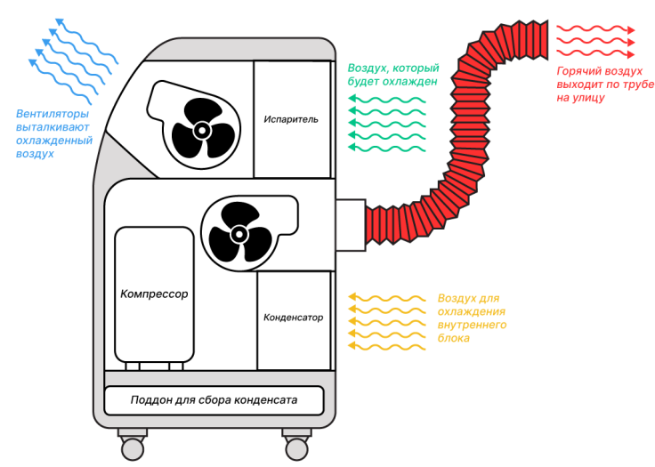

Не вспыхнет и не взорвется! Почему мобильные кондиционеры безопасны?
Мини-кондиционер, как устройство, не предоставляет серьёзной опасности. Некотороые пользователи после покупки, не торопятся читать инструкцию, и стремятся разобраться самостоятелно. Игнорирование правил использования приводит к поломке кондиционера, а в редких и к короткому замыканию, который приведет к пожару.
Инженер-электрик Алексей Виноградов, магазина «Айс бейби» на примере мобильного кондиционера Электролюкс Манго расскажет, о том, как работают кондиционеры, как защищены и где лучше всего их устанавливать.
Как работает?
Принцип работы переносного кондиционера идентичен классическому кондиционеру. Отличается отсутствием наружного блока и малой мощностью.
Система работает по замкнутому циклу. Компрессор сжимает хладагент до газообразного состояния и нагнетает в конденсатор. В конденсаторе фреон охлаждается за счет теплообмена с наружным воздухом и проходит через дросселирующее устройство в испаритель, где происходит резкое понижение температуры и переход в жидкое состояние. Теплый воздух, проходя через испаритель, становится холодным на испарителе начинает образовыватся конденсат, а внутри фреон снова становится газообразным и попадает в компрессор.
Мобильные кондиционеры оснащают надёжными предохранителями и в критических ситуациях, или неправельной эксплотации устройство отключается.
Современные модели мини-кондиционеров пожароустойчивы. Корпус состоит из тугоплавкого пластика, труба для вывода горячего воздуха из полипропилена, провод из специального ПВХ-пластика, эти материалы не подвергается горению.
Интерфейс смарт-панели понятен без инструкции, и поможет при выборе оптимального режима, а в случае ошибок или неправильном использовании сообщит тремя вариантами сигналов.
Где установить кондиционер?
Ставить мобильный кондиционер нужно в жилых помещениях рядом с окном, нужно шторы привязать, чтобы не перекрывать отверстия по забору воздуха. Расстояние до стен не менее 30 см, если установить чуть ближе к стене, то нарушите циркуляцию воздуха и устройство.
Переносной кондиционер нельзя устанавливать в помещениях с огнем, повышенной влажностью и прямыми солнечными лучами. Эти действия выведут из строя кондиционер.


Трубу выводите на улицу через окно или монтажное отверстие. Высота для отвода горячего воздуха должна быть от 30 до 120 см, если установите выше, то заломаете трубу и нарушите циркуляцию воздуха и кондиционер будет чаще перегреваться.
Выводы
Таким образом, если следовать этим рекомендациям, мобильный кондиционер прослужит дольше, и вы не подвергните себя опасности. Надеемся, что эта статья оказалась для вас полезной, и мы приглашаем посетить наш каталог для детального ознакомления.